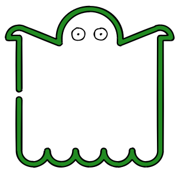
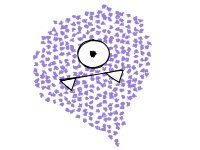
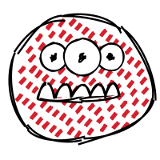

Year: 2022
Team: Zhinuo Wang, Jiayao Jin
What are ghosts like? Are they just always scary and spooky? This project offers some imagination towards ghosts with different characteristics and uses interations between the ghosts and the users to show the different personalities.
Click on each ghost to see the corresponding interaction!
If you are interested in this project, feel free to play with it here!
  